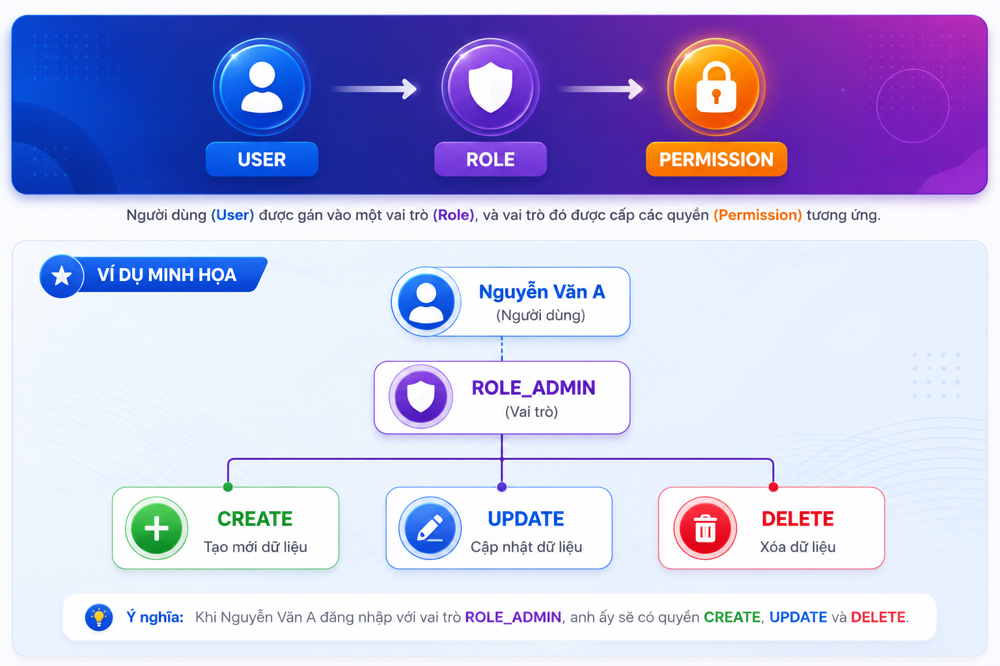
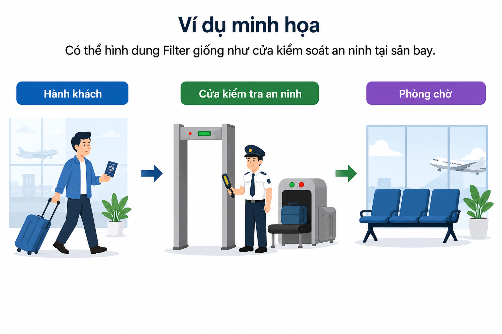
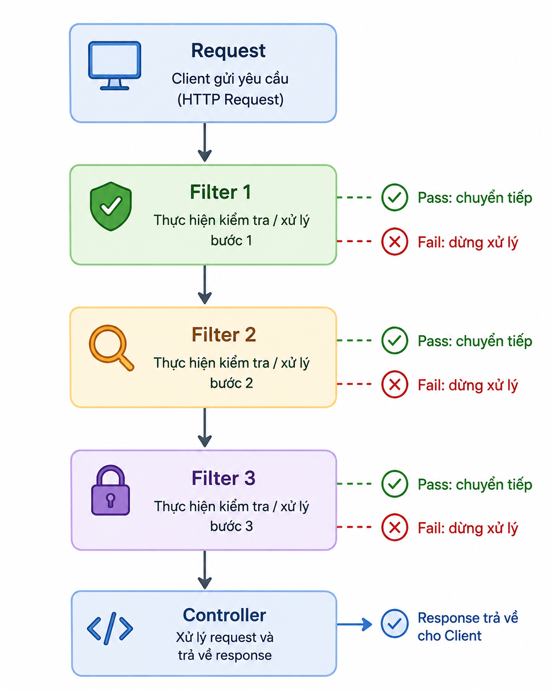
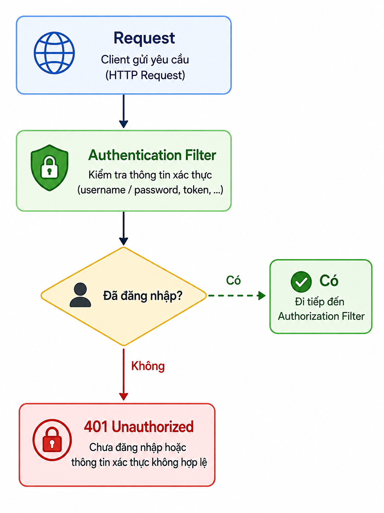
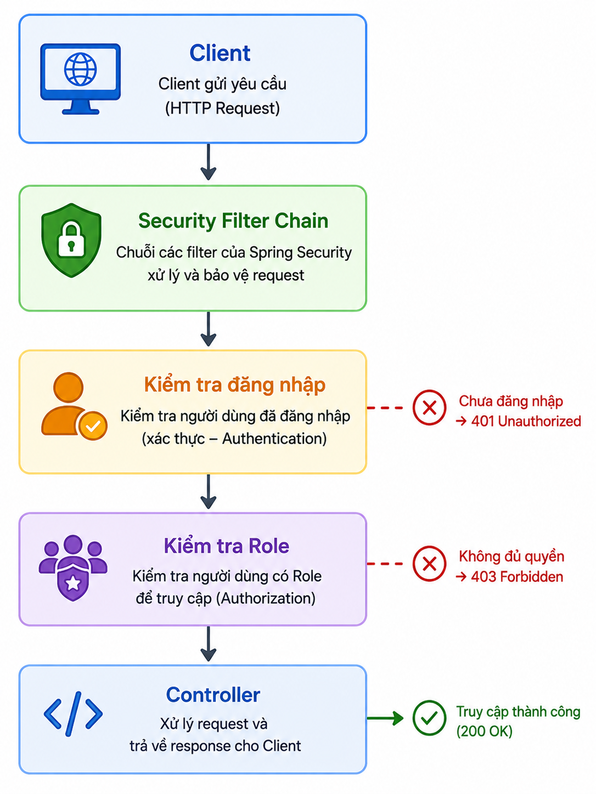
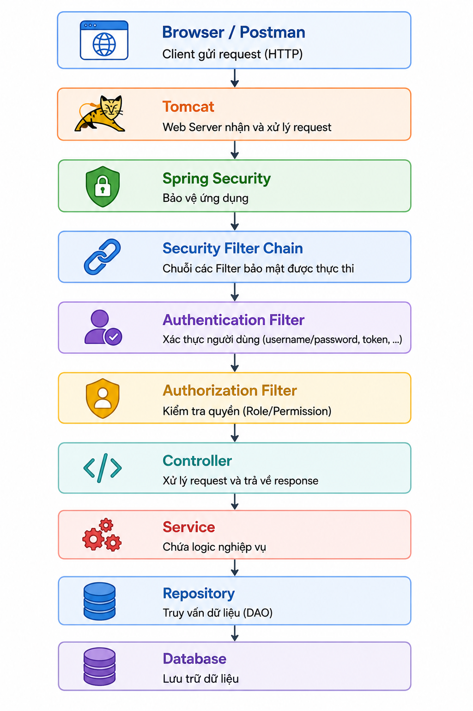
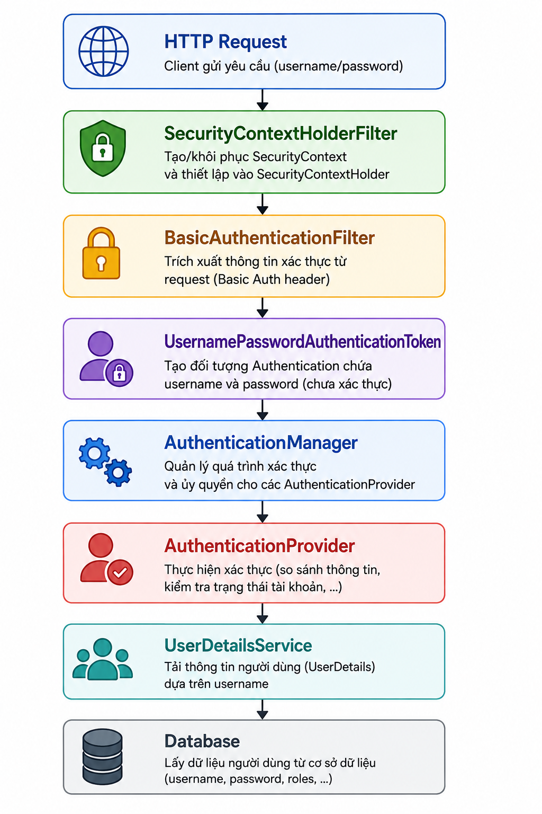
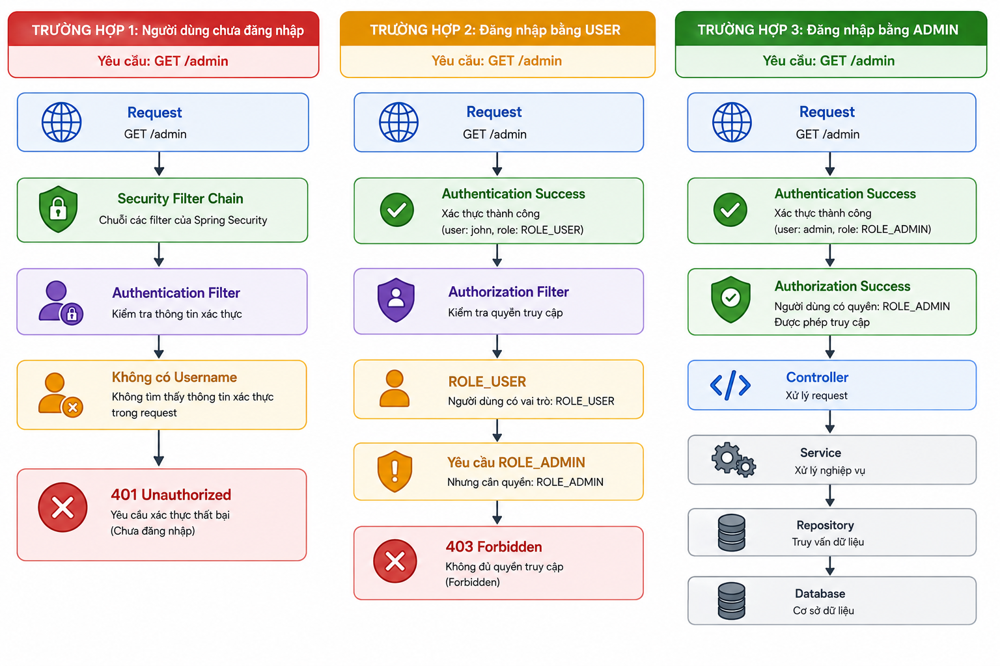
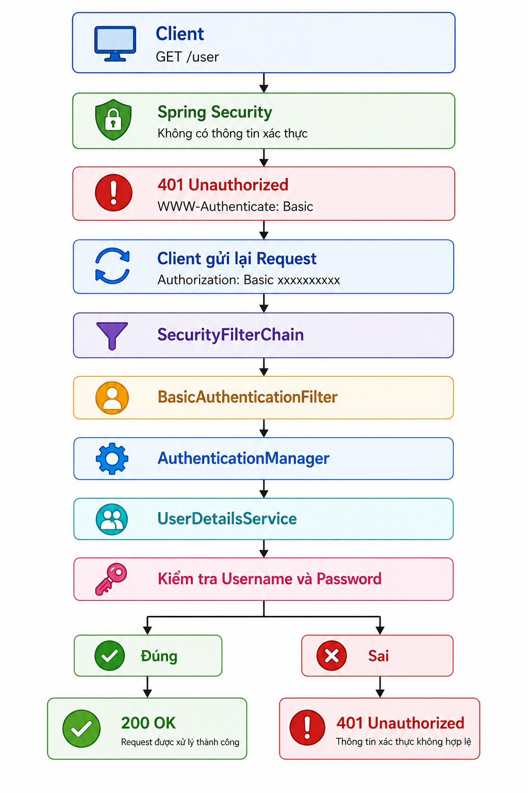

1.1 Giới thiệu về Spring Security

1.1.1 Bảo mật trong ứng dụng Web
Trong thời đại chuyển đổi số, hầu hết các hệ thống phần mềm đều hoạt động trên nền tảng Internet. Các ứng dụng như ngân hàng điện tử, thương mại điện tử, quản lý nhân sự, bệnh viện, giáo dục hay mạng xã hội đều lưu trữ lượng lớn dữ liệu quan trọng của người dùng.
Nếu không có cơ chế bảo mật phù hợp, hệ thống có thể đối mặt với nhiều nguy cơ như:
- Truy cập trái phép vào dữ liệu.
- Đánh cắp tài khoản người dùng.
- Thay đổi hoặc xóa dữ liệu.
- Chiếm quyền quản trị hệ thống.
- Tấn công từ chối dịch vụ (DoS/DDoS).
- Tấn công Cross Site Scripting (XSS).
- Tấn công SQL Injection.
- Giả mạo phiên đăng nhập (Session Hijacking).
- Cross Site Request Forgery (CSRF).
Ví dụ:
Một website bán hàng có hai loại người dùng:
- Khách hàng
- Quản trị viên
Nếu không có cơ chế bảo mật, khách hàng chỉ cần nhập trực tiếp địa chỉ:
http://localhost:8080/admin/products
vẫn có thể truy cập vào trang quản trị. Điều này gây hậu quả rất nghiêm trọng:
- Xóa sản phẩm
- Thay đổi giá bán
- Xóa đơn hàng
- Thay đổi thông tin khách hàng
Do đó, mọi ứng dụng Web đều cần có cơ chế xác thực và phân quyền.
1.1.2 Bảo mật là gì?
Bảo mật (Security) là tập hợp các kỹ thuật và cơ chế nhằm bảo vệ hệ thống thông tin khỏi các hành vi truy cập trái phép, mất mát dữ liệu hoặc các cuộc tấn công từ bên ngoài.
Mục tiêu của bảo mật là đảm bảo chỉ những người được phép mới có thể truy cập đúng tài nguyên mà họ được cấp quyền.
Một hệ thống bảo mật tốt cần đảm bảo ba nguyên tắc cơ bản, thường được gọi là mô hình CIA:
a. Confidentiality (Tính bảo mật)
Chỉ những người được cấp quyền mới được phép truy cập dữ liệu.
Ví dụ: Nhân viên không thể xem bảng lương của tất cả công ty. Sinh viên chỉ được xem điểm của chính mình.
b. Integrity (Tính toàn vẹn)
Dữ liệu không được phép bị thay đổi trái phép.
Ví dụ: Điểm thi của sinh viên chỉ giảng viên mới có quyền cập nhật.
c. Availability (Tính sẵn sàng)
Hệ thống phải luôn hoạt động và phục vụ người dùng hợp lệ.
Ví dụ: Website bán hàng phải luôn sẵn sàng để khách hàng đặt hàng.
1.1.3 Các mối đe dọa phổ biến
Trong quá trình phát triển ứng dụng Web, lập trình viên cần nhận biết các nguy cơ bảo mật thường gặp.
1. SQL Injection
Kẻ tấn công chèn mã SQL vào ô nhập liệu để thao túng cơ sở dữ liệu.
-- Câu lệnh SQL dự kiến SELECT * FROM users WHERE username='admin' AND password='123456'; -- Nếu ứng dụng ghép chuỗi trực tiếp: String sql = "SELECT * FROM users WHERE username='" + username + "' AND password='" + password + "'"; -- Người dùng nhập: Username: admin Password: ' OR '1'='1 -- Câu lệnh SQL trở thành: SELECT * FROM users WHERE username='admin' AND password='' OR '1'='1'; -- Điều kiện luôn đúng. Hacker đăng nhập thành công.
2. Cross Site Scripting (XSS)
Kẻ tấn công chèn JavaScript vào website.
<script>alert("Hack")</script>
Nếu hệ thống không kiểm tra dữ liệu đầu vào, đoạn mã này sẽ được thực thi trên trình duyệt của người dùng khác.
3. Cross Site Request Forgery (CSRF)
Kẻ tấn công lợi dụng phiên đăng nhập của người dùng để gửi yêu cầu giả mạo.
<img src="https://bank.com/transfer?money=10000000&to=123456">
Trình duyệt sẽ tự động gửi request. Nếu không có CSRF Protection, tiền sẽ bị chuyển.
4. Brute Force
Hacker thử hàng nghìn hoặc hàng triệu mật khẩu. Ví dụ: 123456, 12345678, password, admin, qwerty, ... Nếu không giới hạn số lần đăng nhập, tài khoản sẽ rất dễ bị chiếm.
5. Session Hijacking
Sau khi người dùng đăng nhập, hacker đánh cắp Session ID và sử dụng để truy cập hệ thống mà không cần biết mật khẩu.
1.1.4 Vì sao cần Spring Security?
Trước đây, lập trình viên thường tự viết chức năng đăng nhập:
if (username.equals("admin") && password.equals("123456")) { // Login }
Cách làm này có nhiều nhược điểm:
- Không mã hóa mật khẩu.
- Không phân quyền.
- Không chống CSRF.
- Không chống Session Hijacking.
- Không quản lý Session.
- Không hỗ trợ OAuth2.
- Không hỗ trợ JWT.
- Khó mở rộng.
- Khó bảo trì.
Spring Security ra đời nhằm giải quyết toàn bộ các vấn đề trên.
1.1.5 Spring Security là gì?
Spring Security là framework bảo mật chính thức của hệ sinh thái Spring, được thiết kế để cung cấp các giải pháp xác thực (Authentication) và phân quyền (Authorization) cho ứng dụng Java.
Spring Security không chỉ xử lý việc đăng nhập mà còn hỗ trợ:
- Quản lý người dùng.
- Mã hóa mật khẩu.
- Quản lý phiên đăng nhập.
- Phân quyền truy cập.
- Bảo vệ API REST.
- Hỗ trợ JWT.
- Hỗ trợ OAuth2.
- Hỗ trợ OpenID Connect.
- Chống CSRF.
- Chống Session Fixation.
- Chống Clickjacking.
- Bảo vệ HTTP Header.
- Remember Me.
- Login bằng Google.
- Login bằng Facebook.
- Login bằng GitHub.
- LDAP Authentication.
- Database Authentication.
Nhờ đó, lập trình viên không cần xây dựng toàn bộ hệ thống bảo mật từ đầu.
1.1.6 Các chức năng chính của Spring Security
Spring Security cung cấp nhiều tính năng quan trọng.
Xác thực người dùng (Authentication)
Kiểm tra danh tính của người dùng thông qua:
- Username/Password
- JWT Token
- OAuth2
- LDAP
- Google Login
- Facebook Login
Ví dụ: Username: admin, Password: 123456. Nếu thông tin chính xác, hệ thống cho phép đăng nhập.
Phân quyền (Authorization)
Sau khi đăng nhập thành công, hệ thống xác định người dùng được phép thực hiện những chức năng nào.
| Vai trò | Quyền |
|---|---|
| ADMIN | Toàn quyền |
| USER | Xem sản phẩm |
| STAFF | Quản lý đơn hàng |
Mã hóa mật khẩu
Spring Security sử dụng các thuật toán mạnh như:
- BCrypt (khuyến nghị)
- PBKDF2
- SCrypt
- Argon2
Thay vì lưu: 123456, hệ thống lưu: $2a$10$E2B9vH....
Ngay cả quản trị viên cũng không thể biết mật khẩu gốc của người dùng.
Quản lý Session
Spring Security tự động:
- Tạo Session.
- Hủy Session khi đăng xuất.
- Chống Session Fixation.
- Giới hạn số lượng Session.
Bảo vệ API REST
Spring Security có thể bảo vệ API:
- GET /users
- POST /products
- DELETE /orders/10
Chỉ người có quyền phù hợp mới được phép thực hiện.
Hỗ trợ JWT
Đối với các ứng dụng hiện đại như: React, Angular, Vue, Flutter, Android, iOS, Spring Security hỗ trợ xác thực bằng JSON Web Token (JWT), giúp xây dựng các hệ thống RESTful API an toàn và không phụ thuộc vào Session.
Tổng kết
Spring Security là giải pháp toàn diện, mạnh mẽ và linh hoạt cho bảo mật ứng dụng Spring, giúp lập trình viên tập trung vào nghiệp vụ mà không cần lo lắng về các vấn đề bảo mật cơ bản.
2. Authentication và Authorization
2.1. Giới thiệu
Trong hầu hết các ứng dụng Web hiện nay, người dùng không thể truy cập tất cả các chức năng của hệ thống. Mỗi người sẽ được cấp những quyền khác nhau tùy theo vai trò của họ.
Ví dụ, trong một hệ thống quản lý bán hàng:
- Khách hàng (Customer) có thể xem sản phẩm và đặt hàng.
- Nhân viên (Staff) có thể quản lý đơn hàng.
- Quản trị viên (Admin) có toàn quyền quản lý hệ thống.
Để thực hiện điều này, ứng dụng cần trả lời hai câu hỏi quan trọng:
- Bạn là ai?
- Bạn được phép làm gì?
Câu hỏi thứ nhất liên quan đến Authentication (xác thực), còn câu hỏi thứ hai liên quan đến Authorization (phân quyền).
Hai khái niệm này là nền tảng của mọi hệ thống bảo mật và là cốt lõi của Spring Security.
2.2. Authentication là gì?
Authentication (Xác thực) là quá trình kiểm tra danh tính của người dùng.
Nói cách khác, hệ thống sẽ xác minh xem người đang gửi yêu cầu có đúng là người mà họ khai báo hay không.
Ví dụ:
Người dùng nhập:
- Username: admin
- Password: 123456
Hệ thống sẽ:
- Tìm tài khoản có tên admin.
- So sánh mật khẩu nhập vào với mật khẩu đã lưu trong cơ sở dữ liệu.
- Nếu trùng khớp → xác thực thành công.
- Nếu không trùng → từ chối đăng nhập.
Nếu xác thực thành công, Spring Security sẽ coi người dùng là đã đăng nhập (Authenticated User).
Ví dụ thực tế
Khi đến thư viện trường đại học, sinh viên phải xuất trình thẻ sinh viên.
- Nếu thẻ hợp lệ → được vào thư viện.
- Nếu thẻ giả hoặc không đúng → bị từ chối.
Trong trường hợp này:
- Thẻ sinh viên đóng vai trò là thông tin xác thực.
- Nhân viên thư viện thực hiện quá trình Authentication.
2.3. Authorization là gì?
Sau khi người dùng đã được xác thực, hệ thống cần quyết định họ được phép thực hiện những hành động nào.
Quá trình này được gọi là Authorization (Phân quyền).
Ví dụ:
| Người dùng | Vai trò | Quyền |
|---|---|---|
| Admin | ADMIN | Toàn quyền |
| Nhân viên | STAFF | Quản lý đơn hàng |
| Khách hàng | USER | Đặt hàng |
Giả sử:
GET /products→ Mọi người dùng đều có thể truy cập.DELETE /products/10→ Chỉ ADMIN mới được phép thực hiện.
Nếu USER gửi yêu cầu xóa sản phẩm, Spring Security sẽ trả về:
403 Forbidden
Điều này cho thấy người dùng đã đăng nhập thành công nhưng không có quyền truy cập.
2.4. So sánh Authentication và Authorization
Đây là hai khái niệm thường bị nhầm lẫn.
| Authentication | Authorization |
|---|---|
| Xác thực người dùng | Phân quyền người dùng |
| Trả lời câu hỏi "Bạn là ai?" | Trả lời câu hỏi "Bạn được phép làm gì?" |
| Thực hiện trước | Thực hiện sau |
| Kiểm tra Username và Password | Kiểm tra Role hoặc Permission |
| Thành công mới được phân quyền | Chỉ áp dụng khi đã xác thực |
Ví dụ:
- Một nhân viên đăng nhập thành công vào hệ thống.
- Authentication xác nhận đây đúng là tài khoản của nhân viên.
- Authorization xác định nhân viên chỉ được xem đơn hàng, không được xóa tài khoản người dùng.
2.5. Vai trò của User, Role và Permission
Để quản lý quyền truy cập, Spring Security thường sử dụng ba khái niệm:
a. User
Là người sử dụng hệ thống.
Ví dụ: admin, manh, student01
Mỗi User thường có các thông tin:
- Username
- Password
- Trạng thái tài khoản
- Danh sách quyền
b. Role
Role là vai trò của người dùng.
Ví dụ: ROLE_ADMIN, ROLE_USER, ROLE_MANAGER
Một người có thể có nhiều Role.
Ví dụ: Nguyễn Văn A có thể có cả ROLE_USER và ROLE_MANAGER.
Lưu ý: Trong Spring Security, tên Role thường được đặt với tiền tố
ROLE_.
Ví dụ: ROLE_ADMIN, ROLE_USER, ROLE_STAFF
Khi sử dụng phương thức .hasRole("ADMIN"), Spring Security sẽ tự động hiểu là
ROLE_ADMIN.
c. Permission
Permission là quyền cụ thể mà người dùng có thể thực hiện.
Ví dụ: READ_PRODUCT, CREATE_PRODUCT, UPDATE_PRODUCT, DELETE_PRODUCT
Một Role sẽ bao gồm nhiều Permission.
Ví dụ:
- ROLE_ADMIN: CREATE_PRODUCT, UPDATE_PRODUCT, DELETE_PRODUCT, CREATE_USER, DELETE_USER
- ROLE_USER: READ_PRODUCT, CREATE_ORDER
2.6. Mối quan hệ giữa User, Role và Permission
Có thể mô tả như sau:

2.7. Quy trình Authentication và Authorization
Quá trình xử lý một yêu cầu trong Spring Security có thể mô tả như sau:

Quy trình này diễn ra hoàn toàn tự động khi ứng dụng được cấu hình Spring Security.
2.8. Ví dụ minh họa
Giả sử hệ thống có ba API:
GET /publicGET /userGET /admin
Quy tắc phân quyền:
| API | Quyền truy cập |
|---|---|
| /public | Tất cả mọi người |
| /user | USER, ADMIN |
| /admin | ADMIN |
Trường hợp 1: Chưa đăng nhập
Yêu cầu: GET /admin
Kết quả: 401 Unauthorized
Nguyên nhân: Người dùng chưa được xác thực (Authentication thất bại).
Trường hợp 2: Đăng nhập bằng USER
Yêu cầu: GET /admin
Kết quả: 403 Forbidden
Nguyên nhân: Đăng nhập thành công nhưng không có quyền (Authorization thất bại).
Trường hợp 3: Đăng nhập bằng ADMIN
Yêu cầu: GET /admin
Kết quả: 200 OK
Nguyên nhân: Đã xác thực thành công và có đủ quyền truy cập.
2.9. Những lỗi thường gặp
1. Nhầm lẫn giữa 401 và 403
- 401 Unauthorized: Chưa xác thực hoặc thông tin đăng nhập không hợp lệ.
- 403 Forbidden: Đã xác thực nhưng không có quyền truy cập.
2. Đặt sai tên Role
.hasRole("ADMIN")
Trong cơ sở dữ liệu lại lưu:
ADMIN
Thay vì:
ROLE_ADMIN
Điều này có thể khiến việc kiểm tra quyền không hoạt động như mong đợi nếu cấu hình không thống nhất.
3. Cho rằng đăng nhập thành công là có toàn quyền
Thực tế, đăng nhập chỉ chứng minh danh tính. Mọi hành động sau đó vẫn phải được kiểm tra quyền truy cập.
Tổng kết
Authentication và Authorization là hai khái niệm nền tảng của bảo mật ứng dụng Web. Authentication xác định "ai là ai", còn Authorization quyết định "ai được làm gì". Spring Security cung cấp cơ chế mạnh mẽ để quản lý cả hai quá trình này một cách tự động và linh hoạt.
1.3. Kiến trúc Spring Security
1.3.1. Tổng quan kiến trúc Spring Security
Spring Security không chỉ là một thư viện cung cấp chức năng đăng nhập mà còn là một framework bảo mật hoàn chỉnh. Framework này được xây dựng theo mô hình nhiều tầng (Layered Architecture), trong đó mỗi thành phần đảm nhận một nhiệm vụ riêng biệt và phối hợp với nhau để xử lý yêu cầu từ người dùng.
Khi một HTTP Request được gửi đến ứng dụng, Spring Security sẽ chặn yêu cầu trước khi nó đến Controller. Hệ thống sẽ kiểm tra:
- Người dùng đã đăng nhập hay chưa.
- Thông tin đăng nhập có hợp lệ hay không.
- Người dùng có quyền truy cập tài nguyên hay không.
Nếu tất cả điều kiện đều thỏa mãn, yêu cầu mới được chuyển đến Controller để xử lý.
1.3.2. Kiến trúc tổng quát

Có thể chia thành hai giai đoạn chính:
- Giai đoạn 1 - Authentication: Kiểm tra danh tính người dùng.
- Giai đoạn 2 - Authorization: Kiểm tra quyền truy cập tài nguyên.
1.3.3. Các thành phần chính của Spring Security
Spring Security gồm nhiều thành phần, nhưng trong chương này chúng ta tập trung vào sáu thành phần quan trọng nhất.
| Thành phần | Chức năng |
|---|---|
| SecurityFilterChain | Chặn và xử lý mọi Request |
| AuthenticationManager | Điều phối quá trình xác thực |
| AuthenticationProvider | Thực hiện xác thực |
| UserDetailsService | Lấy thông tin người dùng |
| PasswordEncoder | Kiểm tra mật khẩu |
| SecurityContextHolder | Lưu thông tin người dùng đã đăng nhập |
1.3.4. Security Filter Chain
Khái niệm
SecurityFilterChain là trái tim của Spring Security. Đây là thành phần đầu tiên nhận tất cả các HTTP Request trước khi chúng được chuyển đến Controller.
Có thể hình dung SecurityFilterChain giống như cổng kiểm soát an ninh của một tòa nhà. Mọi người muốn vào tòa nhà đều phải đi qua cổng kiểm tra. Nếu không đạt yêu cầu, họ sẽ không được phép vào bên trong. Trong Spring Security cũng vậy, mọi Request đều phải đi qua Filter Chain.

Nếu người dùng chưa đăng nhập: HTTP 401. Nếu không có quyền: HTTP 403.
Controller sẽ không bao giờ được gọi.
Vai trò
Security Filter Chain chịu trách nhiệm:
- Kiểm tra Authentication.
- Kiểm tra Authorization.
- Kiểm tra CSRF.
- Kiểm tra Session.
- Kiểm tra JWT.
- Kiểm tra Header bảo mật.
- Chống Session Fixation.
- Quản lý Logout.
Trong chương này chúng ta chủ yếu sử dụng: Authentication và Authorization.
1.3.5. AuthenticationManager
Sau khi Request đi qua Filter Chain, nếu cần xác thực, Spring Security sẽ chuyển việc này cho AuthenticationManager.
AuthenticationManager có nhiệm vụ điều phối quá trình xác thực. Nó không trực tiếp kiểm tra Username hoặc Password mà chỉ quyết định sử dụng AuthenticationProvider nào để xử lý.
Ví dụ minh họa
Có thể hình dung:
- Sinh viên
- → Phòng đào tạo (AuthenticationManager)
- → Giảng viên phụ trách (AuthenticationProvider)
1.3.6. AuthenticationProvider
AuthenticationProvider là thành phần thực hiện việc xác thực.
Nhiệm vụ của nó gồm:
- Lấy Username.
- Lấy Password.
- Tìm User.
- Kiểm tra Password.
- Trả về kết quả Authentication.
Nếu thông tin đúng: Authenticated = true. Nếu sai:
BadCredentialsException → Spring Security trả về 401 Unauthorized.
1.3.7. UserDetailsService
AuthenticationProvider không tự đọc dữ liệu từ cơ sở dữ liệu. Thay vào đó, nó gọi UserDetailsService.
Nhiệm vụ của UserDetailsService:
- Tìm User theo Username.
- Trả về UserDetails.
public interface UserDetailsService {
UserDetails loadUserByUsername(String username);
}
Giả sử người dùng nhập Username = admin, UserDetailsService sẽ thực hiện
SELECT * FROM users WHERE username='admin' và tạo đối tượng UserDetails.
1.3.8. UserDetails
UserDetails là một interface mô tả thông tin bảo mật của người dùng.
Thông thường bao gồm:
- Username
- Password
- Authorities (ROLE_ADMIN, ROLE_USER, ...)
- Enabled
- AccountExpired
- AccountLocked
- CredentialsExpired
Ví dụ
- Username: admin
- Password: $2a$10....
- Authorities: ROLE_ADMIN, ROLE_USER
Spring Security sẽ lưu đối tượng này trong bộ nhớ sau khi đăng nhập thành công.
1.3.9. PasswordEncoder
Mật khẩu trong Database không nên lưu dạng 123456 mà nên mã hóa như
$2a$10$A1B...... Do đó Spring Security sử dụng PasswordEncoder để:
- Mã hóa Password.
- So sánh Password.
passwordEncoder.matches(rawPassword, encodedPassword);
Nếu rawPassword = "123456" khớp với BCrypt $2a$10$...... thì xác thực
thành công.
1.3.10. SecurityContextHolder
Sau khi đăng nhập thành công, Spring Security cần lưu thông tin người dùng. Thành phần thực hiện việc này là SecurityContextHolder.
Authentication authentication = SecurityContextHolder.getContext().getAuthentication(); String username = authentication.getName(); // admin Collection<? extends GrantedAuthority> authorities = authentication.getAuthorities(); // ROLE_ADMIN, ROLE_USER
1.3.11. Luồng xử lý chi tiết
Giả sử người dùng gửi GET /admin kèm Username: admin,
Password: 123456. Quá trình diễn ra như sau:
Bước 1: Request đi vào Security Filter Chain
Bước 2: Filter yêu cầu xác thực
Bước 3: AuthenticationManager nhận yêu cầu
Bước 4: AuthenticationProvider thực hiện xác thực
Bước 5: AuthenticationProvider gọi UserDetailsService
Bước 6: UserDetailsService lấy dữ liệu từ Database
Bước 7: PasswordEncoder kiểm tra Password
Bước 8: Nếu đúng → Authentication Success
Bước 9: Thông tin người dùng được lưu vào SecurityContextHolder
Bước 10: Spring Security kiểm tra quyền (ROLE_ADMIN)
Bước 11: Nếu hợp lệ → Controller
Bước 12: Controller trả Response
1.3.12. Ví dụ thực tế
Hãy tưởng tượng một công ty:
- Bảo vệ đứng ở cổng → Security Filter Chain
- Kiểm tra thẻ nhân viên → Authentication
- Liên hệ phòng nhân sự → UserDetailsService
- Xác nhận nhân viên → Database
- Kiểm tra chức vụ → Authorization
- Nếu là Giám đốc → Cho vào phòng họp → Controller
| Thực tế | Spring Security |
|---|---|
| Bảo vệ | Security Filter Chain |
| Phòng nhân sự | UserDetailsService |
| Danh sách nhân viên | Database |
| Kiểm tra thẻ | PasswordEncoder |
| Trưởng phòng bảo vệ | AuthenticationManager |
| Nhân viên kiểm tra | AuthenticationProvider |
| Thẻ đã xác minh | SecurityContextHolder |
Tổng kết
Kiến trúc Spring Security được thiết kế theo mô hình Filter Chain với các thành phần rõ ràng. Việc hiểu rõ vai trò của từng thành phần giúp lập trình viên dễ dàng cấu hình và mở rộng bảo mật cho ứng dụng.
1.4. Security Filter Chain
1.4.1. Giới thiệu
Một trong những thành phần quan trọng nhất của Spring Security là Security Filter Chain. Đây là "cánh cổng bảo vệ" đầu tiên của ứng dụng.
Trong một ứng dụng Spring Boot thông thường, khi người dùng gửi một yêu cầu HTTP (HTTP Request), yêu cầu sẽ được chuyển trực tiếp đến Controller để xử lý.
Tuy nhiên, khi Spring Security được tích hợp vào ứng dụng, luồng xử lý sẽ thay đổi. Mọi HTTP Request trước khi đến Controller đều phải đi qua Security Filter Chain.
Điều này giúp Spring Security có thể kiểm tra các yêu cầu trước khi cho phép truy cập tài nguyên.

1.4.2. Filter là gì?
Trước khi tìm hiểu Security Filter Chain, cần hiểu khái niệm Filter.
Trong Java Web, Filter là một thành phần nằm giữa Client và Servlet.
Filter có nhiệm vụ:
- Chặn Request.
- Kiểm tra dữ liệu.
- Thay đổi Request nếu cần.
- Thay đổi Response nếu cần.
- Ghi log.
- Kiểm tra quyền truy cập.
Ví dụ minh họa
Có thể hình dung Filter giống như cửa kiểm soát an ninh tại sân bay.

Nếu không đạt yêu cầu kiểm tra, hành khách sẽ không được phép vào khu vực bên trong. Spring Security áp dụng chính nguyên lý này cho các yêu cầu HTTP.
1.4.3. Security Filter Chain là gì?
Security Filter Chain là tập hợp nhiều Filter được Spring Security sắp xếp theo một thứ tự nhất định để xử lý các yêu cầu HTTP. Mỗi Filter đảm nhận một nhiệm vụ riêng.

Một Request phải lần lượt đi qua tất cả các Filter trước khi được chuyển đến Controller. Nếu một Filter từ chối Request thì toàn bộ quá trình sẽ dừng lại.

Controller sẽ không được gọi.
1.4.4. Vì sao cần Security Filter Chain?
Giả sử hệ thống có API: GET /admin
Nếu không có Security Filter Chain:
Client
│
▼
Controller
Bất kỳ ai cũng có thể truy cập. Điều này gây nguy cơ mất an toàn cho hệ thống.
Khi sử dụng Spring Security:

Chỉ những người dùng hợp lệ mới được phép truy cập.
1.4.5. Cơ chế hoạt động của Security Filter Chain
Giả sử người dùng gửi yêu cầu: GET /admin
Quá trình xử lý diễn ra như sau:

Nếu Authentication hoặc Authorization thất bại thì Request sẽ bị dừng ngay tại Filter.
1.4.6. Các Filter trong Spring Security
Spring Security có hơn 30 Filter khác nhau. Mỗi Filter thực hiện một nhiệm vụ chuyên biệt.
Một số Filter quan trọng:
| Filter | Chức năng |
|---|---|
| SecurityContextHolderFilter | Khởi tạo Security Context |
| CsrfFilter | Kiểm tra CSRF |
| LogoutFilter | Xử lý đăng xuất |
| UsernamePasswordAuthenticationFilter | Xử lý đăng nhập bằng Username và Password |
| BasicAuthenticationFilter | Xử lý HTTP Basic Authentication |
| AnonymousAuthenticationFilter | Tạo người dùng Anonymous |
| ExceptionTranslationFilter | Xử lý các ngoại lệ bảo mật |
| AuthorizationFilter | Kiểm tra quyền truy cập |
Trong chương này, chúng ta tập trung vào hai Filter thường gặp nhất: BasicAuthenticationFilter và AuthorizationFilter.
1.4.7. Security Filter Chain hoạt động như thế nào?
Giả sử ứng dụng sử dụng Basic Authentication.
Người dùng gửi: GET /user với Header:
Authorization: Basic YWRtaW46MTIzNDU2
Quá trình xử lý:

Nếu thông tin hợp lệ: Authentication Success. Thông tin người dùng sẽ được lưu vào SecurityContextHolder.
Sau đó Request tiếp tục đi đến AuthorizationFilter. Filter này sẽ kiểm tra người dùng có quyền truy cập URL hay không.
1.4.8. Minh họa quá trình xử lý

1.4.9. Security Filter Chain và Filter Chain của Servlet
Nhiều sinh viên thường nhầm lẫn giữa Filter của Servlet và Security Filter Chain.
| Servlet Filter | Security Filter Chain |
|---|---|
| Thuộc Java Servlet | Thuộc Spring Security |
| Lập trình viên tự tạo | Spring Security tự cấu hình |
| Có thể dùng cho logging, encoding,... | Chỉ phục vụ mục đích bảo mật |
| Hoạt động độc lập | Gồm nhiều Security Filter kết hợp |
Có thể coi Security Filter Chain là một Filter đặc biệt chứa nhiều Filter nhỏ bên trong.
1.4.10. Ưu điểm của Security Filter Chain
Việc xử lý thông qua Security Filter Chain mang lại nhiều lợi ích:
- Tập trung toàn bộ logic bảo mật tại một nơi.
- Dễ dàng thêm hoặc loại bỏ các cơ chế bảo mật.
- Hỗ trợ nhiều phương thức xác thực như Basic Authentication, Form Login, JWT và OAuth2.
- Dễ mở rộng, bảo trì và kiểm soát luồng xử lý.
- Giảm thiểu việc viết mã bảo mật trong Controller và Service.
Tổng kết
Security Filter Chain là trái tim của Spring Security. Nó chặn và xử lý mọi HTTP Request trước khi đến Controller, đảm bảo các yêu cầu đều được kiểm tra xác thực và phân quyền một cách thống nhất.
1.5. Tạo project
1.5.1. Giới thiệu
Sau khi đã tìm hiểu về Authentication, Authorization và Security Filter Chain, bước tiếp theo là xây dựng một dự án Spring Boot để triển khai các chức năng bảo mật.
Trong chương này, chúng ta sẽ phát triển một ứng dụng RESTful API đơn giản với các công nghệ sau:
- Java
- Spring Boot
- Spring Security
- Spring Data JPA
- MySQL
- Maven
- IntelliJ IDEA
- Postman
Đây là bộ công nghệ được sử dụng rộng rãi trong các doanh nghiệp khi xây dựng các ứng dụng Web và hệ thống Backend.
1.5.2. Chuẩn bị môi trường phát triển
Trước khi tạo dự án, cần cài đặt đầy đủ các phần mềm sau.
| Phần mềm | Phiên bản khuyến nghị | Chức năng |
|---|---|---|
| JDK | 21 hoặc mới hơn | Biên dịch và chạy chương trình Java |
| IntelliJ IDEA | Community hoặc Ultimate | Môi trường phát triển tích hợp (IDE) |
| Maven | Tích hợp trong IntelliJ | Quản lý thư viện và quá trình build |
| MySQL Server | 8.0 trở lên | Hệ quản trị cơ sở dữ liệu |
| MySQL Workbench | Mới nhất | Quản lý và thao tác với cơ sở dữ liệu |
| Postman | Mới nhất | Kiểm thử REST API |
| Git (khuyến nghị) | Mới nhất | Quản lý mã nguồn |
Lưu ý: Giáo trình sử dụng Java 21 và Spring Boot 3.x/4.x. Nếu sử dụng phiên bản thấp hơn, một số API hoặc cách cấu hình có thể khác.
1.5.3. Tạo dự án bằng Spring Initializr
Spring Initializr là công cụ chính thức của Spring dùng để khởi tạo nhanh một dự án Spring Boot với đầy đủ cấu trúc và các thư viện cần thiết.
Các bước thực hiện
Bước 1: Truy cập trang Spring Initializr.
Bước 2: Chọn các thông số:
| Thuộc tính | Giá trị |
|---|---|
| Project | Maven |
| Language | Java |
| Spring Boot | Phiên bản ổn định mới nhất |
| Packaging | Jar |
| Java | 21 |
Bước 3: Nhập thông tin dự án.
| Thuộc tính | Ví dụ |
|---|---|
| Group | com.example |
| Artifact | spring-security-demo |
| Name | spring-security-demo |
| Package Name | com.example.springsecuritydemo |
Bước 4: Chọn các dependency.
Sau khi hoàn tất, nhấn Generate để tải dự án về máy.
1.5.4. Tạo SQL
DROP DATABASE IF EXISTS spring_security; CREATE DATABASE spring_security; USE spring_security; CREATE TABLE users ( id INT PRIMARY KEY AUTO_INCREMENT, username VARCHAR(50) NOT NULL UNIQUE, password VARCHAR(100) NOT NULL, role VARCHAR(20) NOT NULL, enabled BOOLEAN DEFAULT TRUE ); INSERT INTO users (username, password, role, enabled) VALUES ('user', '123456', 'USER', TRUE), ('admin', '123456', 'ADMIN', TRUE), ('manager', '123456', 'MANAGER', TRUE); SELECT * FROM users;
1.5.5. Cấu trúc dự án
Sau khi mở bằng IntelliJ IDEA, dự án sẽ có cấu trúc như sau:
spring-security-demo
│
├── src
│ ├── main
│ │
│ ├── java
│ │
│ │── controller
│ │── service
│ │── repository
│ │── entity
│ │── config
│ │── dto
│ │── SpringSecurityDemoApplication.java
│ │
│ └── resources
│ │
│ ├── application.properties
│ ├── static
│ └── templates
│
└── pom.xml
Ý nghĩa các thư mục
| Thư mục | Chức năng |
|---|---|
| controller | Tiếp nhận HTTP Request |
| service | Xử lý nghiệp vụ |
| repository | Truy cập cơ sở dữ liệu |
| entity | Ánh xạ bảng dữ liệu |
| config | Chứa các lớp cấu hình Spring Security |
| resources | Lưu tệp cấu hình và tài nguyên |
1.5.6. Tệp pom.xml
pom.xml là tệp cấu hình trung tâm của Maven.
<dependencies>
<!-- Spring Web -->
<dependency>
<groupId>org.springframework.boot</groupId>
<artifactId>spring-boot-starter-web</artifactId>
</dependency>
<!-- Spring Security -->
<dependency>
<groupId>org.springframework.boot</groupId>
<artifactId>spring-boot-starter-security</artifactId>
</dependency>
<!-- Spring Data JPA -->
<dependency>
<groupId>org.springframework.boot</groupId>
<artifactId>spring-boot-starter-data-jpa</artifactId>
</dependency>
<!-- MySQL -->
<dependency>
<groupId>com.mysql</groupId>
<artifactId>mysql-connector-j</artifactId>
</dependency>
</dependencies>
Maven sẽ tự động tải các thư viện này từ kho lưu trữ Maven Central và quản lý các thư viện phụ thuộc (transitive dependencies), giúp giảm đáng kể công sức cấu hình thủ công.
1.5.7. Cấu hình kết nối MySQL
Trong tệp application.properties:
spring.datasource.url=jdbc:mysql://localhost:3306/spring_security spring.datasource.username=root spring.datasource.password=123456 spring.jpa.hibernate.ddl-auto=update spring.jpa.show-sql=true spring.jpa.properties.hibernate.format_sql=true
Giải thích
| Thuộc tính | Ý nghĩa |
|---|---|
| spring.datasource.url | Địa chỉ kết nối MySQL |
| spring.datasource.username | Tài khoản MySQL |
| spring.datasource.password | Mật khẩu MySQL |
| spring.jpa.hibernate.ddl-auto=update | Tự động cập nhật cấu trúc bảng |
| spring.jpa.show-sql=true | Hiển thị câu lệnh SQL trên Console |
| spring.jpa.properties.hibernate.format_sql=true | Định dạng SQL dễ đọc |
1.5.8. Chạy ứng dụng
Mở lớp chứa phương thức main():
@SpringBootApplication public class SpringSecurityDemoApplication { public static void main(String[] args) { SpringApplication.run(SpringSecurityDemoApplication.class, args); } }
Nhấn Run trong IntelliJ IDEA.
Nếu khởi động thành công, cửa sổ Console sẽ hiển thị log. Tuỳ thuộc vào việc bạn đã thêm dependency spring-boot-starter-security hay chưa, log sẽ có sự khác biệt:
- Trường hợp chưa có Spring Security (chưa thêm dependency hoặc đã comment nó trong
pom.xml):
Tomcat started on port 8080 Started SpringSecurityDemoApplication
- Trường hợp đã có Spring Security (là tình huống phổ biến nếu bạn làm theo đúng thứ tự và đã thêm dependency ở mục 1.6 hoặc giữ nó ngay từ đầu):
Tomcat started on port 8080 Started SpringSecurityDemoApplication Using generated security password: 467a97ae-fcae-49ac-9e8a-412e84633fb8
(Nếu dùng JPA/Hibernate, bạn còn thấy các dòng log về Hibernate và JPA, điều đó hoàn toàn bình thường.)
Ý nghĩa của các dòng log:
Tomcat started on port 8080– Máy chủ Tomcat đã khởi động và lắng nghe tại cổng 8080.Started SpringSecurityDemoApplication– Ứng dụng Spring Boot đã sẵn sàng.Using generated security password: ...– Spring Security tự động tạo một mật khẩu ngẫu nhiên cho người dùng mặc định làuser. Bạn sẽ dùng mật khẩu này để xác thực khi gửi yêu cầu đến ứng dụng (nếu chưa cấu hình bảo mật tuỳ chỉnh).
/login. Do đó, hành vi kiểm tra ở mục 1.5.9 sẽ khác so với khi chưa có Security.
1.5.9. Kiểm tra hoạt động
Tạo một Controller đơn giản để kiểm tra:
@RestController public class HomeController { @GetMapping("/") public String home() { return "Welcome to Spring Security!"; } }
Nếu bạn chưa thêm Spring Security
Gửi yêu cầu GET http://localhost:8080/ (bằng trình duyệt hoặc Postman) sẽ nhận được phản hồi:
Welcome to Spring Security!
Nếu bạn đã thêm Spring Security (tình huống thực tế)
Ứng dụng sẽ yêu cầu xác thực. Bạn cần gửi kèm thông tin đăng nhập:
- Username:
user - Password: Lấy từ dòng log
Using generated security password: ...trong Console khi chạy ứng dụng (ví dụ:467a97ae-fcae-49ac-9e8a-412e84633fb8).
Cách kiểm tra:
- Dùng Postman:
- Chọn phương thức
GET, nhập URLhttp://localhost:8080/. - Vào thẻ Authorization, chọn Basic Auth.
- Nhập
uservà password vừa lấy được. - Gửi yêu cầu – bạn sẽ nhận được phản hồi
Welcome to Spring Security!.
- Chọn phương thức
- Dùng
curl:curl -u user:467a97ae-fcae-49ac-9e8a-412e84633fb8 http://localhost:8080/
- Dùng trình duyệt:
- Truy cập
http://localhost:8080/, trình duyệt sẽ tự động chuyển hướng đến trang đăng nhập mặc định (giao diện trắng của Spring Security). - Nhập
uservà password, sau đó đăng nhập. Bạn sẽ thấy dòng chữWelcome to Spring Security!.
- Truy cập
Nếu bạn gửi yêu cầu không có thông tin xác thực, sẽ nhận được lỗi 401 Unauthorized (đối với Postman/curl) hoặc bị chuyển hướng đến trang login (đối với trình duyệt).
1.5.10. Những lỗi thường gặp
| Lỗi | Nguyên nhân | Cách khắc phục |
|---|---|---|
| Port 8080 was already in use | Cổng 8080 đang được ứng dụng khác sử dụng | Dừng ứng dụng hoặc đổi server.port |
| Communications link failure | MySQL chưa chạy hoặc sai thông tin kết nối | Kiểm tra MySQL và application.properties |
| ClassNotFoundException | Thiếu dependency | Kiểm tra pom.xml và Reload Maven |
| Unsupported class file major version | Phiên bản JDK không tương thích | Cập nhật JDK hoặc điều chỉnh cấu hình dự án |
Tổng kết
Sau khi hoàn thành bước này, bạn đã có một dự án Spring Boot sẵn sàng với đầy đủ cấu hình cơ bản. Các bước tiếp theo sẽ tập trung vào việc cấu hình Spring Security và xây dựng các chức năng bảo mật cho ứng dụng.
1.6. Cấu hình SecurityFilterChain
1.6.1. Giới thiệu
- Hiểu vai trò của
SecurityFilterChaintrong Spring Security. - Tạo và cấu hình
SecurityFilterChaincho ứng dụng Spring Boot. - Cấu hình xác thực và phân quyền cho các API.
-
Hiểu ý nghĩa của các phương thức:
authorizeHttpRequests(),requestMatchers(),permitAll(),authenticated()vàhasRole(). - Kiểm thử các API bằng Postman.
1.6.2. Giới thiệu SecurityFilterChain
Khái niệm SecurityFilterChain
SecurityFilterChain là một interface trong Spring Security, đại diện cho một chuỗi các bộ lọc (Filter) sẽ được áp dụng cho các yêu cầu HTTP khớp với một pattern nhất định.
Vì sao WebSecurityConfigurerAdapter không còn được sử dụng?
Trong Spring Security 5.x và các phiên bản trước đó, cách phổ biến để cấu hình bảo mật là kế thừa
lớp WebSecurityConfigurerAdapter và ghi đè các phương thức
configure().
Tuy nhiên, từ Spring Security 5.7.0-M2 trở đi, lớp này đã bị đánh dấu là Deprecated (không còn được khuyến nghị sử dụng). Nguyên nhân là do:
- Khuyến khích sử dụng cấu hình dựa trên Bean thay vì kế thừa.
- Giảm sự phụ thuộc vào kế thừa, tăng tính linh hoạt và dễ kiểm thử.
- Phù hợp với xu hướng cấu hình hàm (functional configuration) trong Spring Boot.
Thay vào đó, Spring Security khuyến nghị sử dụng SecurityFilterChain Bean được
khai báo trong lớp @Configuration.
Vai trò của HttpSecurity
HttpSecurity là một đối tượng cấu hình cho phép định nghĩa các quy tắc bảo mật cho các yêu cầu HTTP. Nó cung cấp các phương thức để:
- Phân quyền cho các endpoint (
authorizeHttpRequests()). - Cấu hình xác thực (
httpBasic(),formLogin()). - Quản lý Session (
sessionManagement()). - Cấu hình bảo vệ CSRF (
csrf()).
Mối quan hệ giữa SecurityFilterChain và các Security Filter
SecurityFilterChain là nơi tập hợp các Filter và quyết định thứ tự thực thi của chúng. Khi một HTTP Request được gửi đến:

Mỗi Filter trong chuỗi có thể:
- Xử lý Request và chuyển tiếp cho Filter tiếp theo.
- Dừng chuỗi và trả về Response (ví dụ: 401 Unauthorized).
1.6.3. Tạo lớp cấu hình bảo mật
Tạo package config và lớp SecurityConfig.java.
package com.example.springsecuritydemo.config; import org.springframework.context.annotation.Configuration; import org.springframework.security.config.annotation.web.configuration.EnableWebSecurity; @Configuration // Đánh dấu đây là lớp cấu hình @EnableWebSecurity // Kích hoạt Spring Security public class SecurityConfig { }
Giải thích:
- @Configuration: Đánh dấu lớp chứa các Bean cấu hình cho Spring Container.
- @EnableWebSecurity: Kích hoạt Spring Security và tích hợp với ứng dụng. Nếu thiếu annotation này, các cấu hình bảo mật sẽ không được áp dụng.
1.6.4. Tạo Bean SecurityFilterChain
Trong SecurityConfig, khai báo Bean SecurityFilterChain:
@Bean public SecurityFilterChain securityFilterChain(HttpSecurity http)throws Exception { http .authorizeHttpRequests(auth -> auth .anyRequest().authenticated() // Mọi request đều yêu cầu xác thực ) .httpBasic(Customizer.withDefaults()); // Sử dụng Basic Authentication return http.build(); // Xây dựng SecurityFilterChain }
Phân tích từng dòng mã:
| Thành phần | Ý nghĩa |
|---|---|
| @Bean | Đăng ký phương thức trả về SecurityFilterChain như một Bean trong Spring Container. |
| HttpSecurity http | Đối tượng cấu hình cho các quy tắc bảo mật HTTP. |
| authorizeHttpRequests() | Bắt đầu cấu hình phân quyền cho các request. |
| anyRequest().authenticated() | Áp dụng quy tắc: mọi request đều yêu cầu người dùng đã xác thực. |
| httpBasic(Customizer.withDefaults()) | Kích hoạt Basic Authentication với cấu hình mặc định. |
| http.build() | Xây dựng đối tượng SecurityFilterChain từ cấu hình HttpSecurity. |
1.6.5. Tạo các API kiểm thử
Tạo DemoController với ba endpoint để kiểm thử:
@RestController @RequestMapping("/api/demo") public class DemoController { @GetMapping("/public") public String publicEndpoint() { return "This is a public endpoint"; } @GetMapping("/user") public String userEndpoint() { return "Hello User!"; } @GetMapping("/admin") public String adminEndpoint() { return "Hello Admin!"; } }
Mục đích của từng API:
- /public: Endpoint công khai, không cần đăng nhập.
- /user: Chỉ dành cho người dùng có role USER.
- /admin: Chỉ dành cho người dùng có role ADMIN.
1.6.6. Cho phép truy cập công khai
Cập nhật SecurityConfig để cho phép truy cập /public mà không cần xác thực:
@Bean public SecurityFilterChain securityFilterChain(HttpSecurity http) throws Exception { http .authorizeHttpRequests(auth -> auth .requestMatchers("/api/demo/public").permitAll() // Cho phép truy cập công khai .anyRequest().authenticated() ) .httpBasic(Customizer.withDefaults()); return http.build(); }
Giải thích:
- requestMatchers("/api/demo/public"): Chỉ định các URL áp dụng quy tắc.
- permitAll(): Cho phép tất cả mọi người truy cập (không cần xác thực).
1.6.7. Yêu cầu xác thực
Cấu hình .anyRequest().authenticated() yêu cầu mọi request khác (không khớp với
requestMatchers trước đó) đều phải xác thực.
Nếu người dùng chưa đăng nhập và gửi yêu cầu đến /api/demo/user:
GET http://localhost:8080/api/demo/user
Kết quả sẽ là:
401 Unauthorized
1.6.8. Phân quyền theo vai trò
Cập nhật SecurityConfig để phân quyền theo Role:
@Bean public SecurityFilterChain securityFilterChain(HttpSecurity http) throws Exception { http .authorizeHttpRequests(auth -> auth .requestMatchers("/api/demo/public").permitAll() .requestMatchers("/api/demo/user").hasRole("USER") // Chỉ USER mới được truy cập .requestMatchers("/api/demo/admin").hasRole("ADMIN") // Chỉ ADMIN mới được truy cập .anyRequest().authenticated() ) .httpBasic(Customizer.withDefaults()); return http.build(); }
Giải thích:
- hasRole("USER"): Chỉ cho phép người dùng có role USER (tức ROLE_USER).
- hasRole("ADMIN"): Chỉ cho phép người dùng có role ADMIN (tức ROLE_ADMIN).
- Tiền tố ROLE_: Spring Security tự động thêm tiền tố ROLE_ khi sử dụng
hasRole(). Vì vậy, khi cấu hình
.hasRole("ADMIN"), hệ thống sẽ kiểm tra quyềnROLE_ADMIN.
Phân biệt hasRole() và hasAuthority()
- hasRole("ADMIN"): Tự động thêm tiền tố ROLE_ → kiểm tra ROLE_ADMIN.
- hasAuthority("ROLE_ADMIN"): Kiểm tra chính xác quyền ROLE_ADMIN (không thêm tiền tố).
- hasAuthority("ADMIN"): Kiểm tra quyền ADMIN (không có tiền tố).
1.6.9. Luồng xử lý của một HTTP Request
Ví dụ với GET /api/demo/admin:

Các trường hợp thực tế:
| Trường hợp | Yêu cầu | Kết quả |
|---|---|---|
| Chưa đăng nhập | GET /api/demo/admin | 401 Unauthorized |
| Đăng nhập USER | GET /api/demo/admin | 403 Forbidden |
| Đăng nhập ADMIN | GET /api/demo/admin | 200 OK "Hello Admin!" |
| Chưa đăng nhập | GET /api/demo/public | 200 OK "This is a public endpoint" |
1.6.10. Kiểm thử bằng Postman
Trường hợp 1: Gọi /public
- Method: GET
- URL:
http://localhost:8080/api/demo/public - Không cần Authorization
- Kết quả dự kiến: 200 OK, body: "This is a public endpoint"
Trường hợp 2: Gọi /user khi chưa đăng nhập
- Method: GET
- URL:
http://localhost:8080/api/demo/user - Không có Authorization header
- Kết quả dự kiến: 401 Unauthorized
Trường hợp 3: Gọi /user với tài khoản USER
- Method: GET
- URL:
http://localhost:8080/api/demo/user - Authorization: Basic Auth với username: user, password: 123456
- Kết quả dự kiến: 200 OK, body: "Hello User!"
Trường hợp 4: Gọi /admin với tài khoản USER
- Method: GET
- URL:
http://localhost:8080/api/demo/admin - Authorization: Basic Auth với username: user, password: 123456
- Kết quả dự kiến: 403 Forbidden (không đủ quyền)
Trường hợp 5: Gọi /admin với tài khoản ADMIN
- Method: GET
- URL:
http://localhost:8080/api/demo/admin - Authorization: Basic Auth với username: admin, password: 123456
- Kết quả dự kiến: 200 OK, body: "Hello Admin!"
Hướng dẫn cấu hình Basic Auth trong Postman
- Chọn tab Authorization.
- Chọn loại Basic Auth.
- Nhập Username và Password.
- Postman tự động thêm header
Authorization: Basic base64(username:password).
1.6.11. Những lỗi thường gặp
Lỗi thường gặp và cách khắc phục
- Quên khai báo @Bean → SecurityFilterChain không được tạo, Spring Security sử dụng cấu hình mặc định.
- Quên return http.build() → Lỗi biên dịch hoặc Bean không hợp lệ.
- Sai thứ tự requestMatchers() → Các quy tắc được áp dụng theo thứ tự khai báo. Quy tắc chung (anyRequest()) nên để sau cùng.
- Nhầm giữa permitAll() và authenticated() → permitAll() cho phép tất cả (kể cả chưa đăng nhập), authenticated() yêu cầu đã đăng nhập.
- Sai tên Role → Khi dùng hasRole("ADMIN"), Spring Security tìm quyền ROLE_ADMIN. Nếu lưu "ADMIN" trong database mà không có tiền tố ROLE_, cần dùng hasAuthority("ADMIN").
- Thiếu httpBasic() → Không có cơ chế xác thực nào được kích hoạt, mọi request sẽ bị từ chối.
Tổng kết
Spring Security cung cấp cách cấu hình linh hoạt thông qua SecurityFilterChain. Việc hiểu rõ các phương thức như authorizeHttpRequests(), requestMatchers(), permitAll(), authenticated() và hasRole() là nền tảng để xây dựng hệ thống bảo mật cho ứng dụng Spring Boot.
1.7. InMemoryUserDetailsManager
1.7.1.Giới thiệu
- Hiểu khái niệm UserDetails và UserDetailsService.
- Hiểu vai trò của InMemoryUserDetailsManager.
- Tạo người dùng trong bộ nhớ (In-Memory User).
- Cấu hình nhiều tài khoản với các vai trò khác nhau.
- Hiểu cách Spring Security xác thực người dùng.
- Kiểm thử đăng nhập bằng Basic Authentication với Postman.
1.7.2. Giới thiệu
Trong mục trước, chúng ta đã cấu hình SecurityFilterChain để bảo vệ các API. Tuy nhiên, ứng dụng vẫn chưa có bất kỳ người dùng nào để thực hiện quá trình xác thực.
Để giải quyết vấn đề này, Spring Security cung cấp nhiều cách quản lý người dùng như:
- InMemoryUserDetailsManager
- JdbcUserDetailsManager
- UserDetailsService
- LDAP
- OAuth2
- JWT
Trong giai đoạn học tập và phát triển ban đầu, cách đơn giản nhất là sử dụng InMemoryUserDetailsManager.
InMemoryUserDetailsManager lưu thông tin người dùng trực tiếp trong bộ nhớ của ứng dụng. Khi ứng dụng dừng, toàn bộ dữ liệu sẽ bị mất.
Do đó, cách này không phù hợp với hệ thống thực tế, nhưng rất hữu ích để học tập và kiểm thử.
1.7.3. UserDetails là gì?
UserDetails là một interface của Spring Security, đại diện cho thông tin của một người dùng.
Đối tượng UserDetails chứa các thông tin như:
- Username
- Password
- Danh sách quyền (Authorities)
- Trạng thái tài khoản
- Trạng thái khóa tài khoản
- Trạng thái hết hạn mật khẩu
- Trạng thái tài khoản có được kích hoạt hay không
Khi người dùng đăng nhập, Spring Security sẽ lấy thông tin từ UserDetails để thực hiện xác thực và phân quyền.
1.7.4. UserDetailsService là gì?
UserDetailsService là interface chịu trách nhiệm tìm kiếm người dùng theo tên đăng nhập.
Spring Security sẽ gọi phương thức:
loadUserByUsername(String username)
để lấy thông tin người dùng.
Trong chương này, InMemoryUserDetailsManager chính là một lớp cài đặt (implements) của UserDetailsService.
Điều này có nghĩa là Spring Security sẽ tìm kiếm người dùng trong bộ nhớ thay vì trong cơ sở dữ liệu.
1.7.5. Cấu hình InMemoryUserDetailsManager
Trong lớp SecurityConfig, tạo Bean:
@Bean public UserDetailsService userDetailsService() { UserDetails user = User.withUsername("user") .password("{noop}123456") .roles("USER") .build(); return new InMemoryUserDetailsManager(user); }
Giải thích
| Phương thức | Ý nghĩa |
|---|---|
| User.withUsername() | Tạo một người dùng mới. |
| password("{noop}123456") | Thiết lập mật khẩu. {noop} cho biết mật khẩu chưa được mã hóa. |
| roles("USER") | Gán vai trò ROLE_USER. |
| build() | Tạo đối tượng UserDetails. |
| InMemoryUserDetailsManager | Quản lý danh sách người dùng trong bộ nhớ. |
Lưu ý: {noop} là một PasswordEncoder đặc biệt, cho biết mật khẩu được lưu dạng plain text (không mã hóa). Trong thực tế, chúng ta sẽ sử dụng BCryptPasswordEncoder để mã hóa mật khẩu.
1.7.6. Tạo nhiều người dùng
Có thể tạo nhiều tài khoản như sau:
@Bean public UserDetailsService userDetailsService() { UserDetails user = User.withUsername("user") .password("{noop}123456") .roles("USER") .build(); UserDetails admin = User.withUsername("admin") .password("{noop}123456") .roles("ADMIN") .build(); return new InMemoryUserDetailsManager(user, admin); }
Sau khi khởi động ứng dụng sẽ có hai tài khoản:
| Username | Password | Role |
|---|---|---|
| user | 123456 | USER |
| admin | 123456 | ADMIN |
1.7.7. Vai trò (Role)
Trong Spring Security, Role thực chất là một Authority có tiền tố ROLE_.
Ví dụ:
.roles("ADMIN") // Spring Security tự động chuyển thành ROLE_ADMIN
Tương tự:
.roles("USER") // Spring Security tự động chuyển thành ROLE_USER
Do đó, khi sử dụng:
.hasRole("ADMIN")
Spring Security sẽ kiểm tra quyền ROLE_ADMIN.
1.7.8. Kiểm thử với Postman
Sau khi cấu hình xong, sử dụng Postman để kiểm thử.
Trường hợp 1: GET /api/demo/public
Yêu cầu:
- Method: GET
- URL:
http://localhost:8080/api/demo/public - Không cần đăng nhập
Kết quả dự kiến: 200 OK - "This is a public endpoint"
Trường hợp 2: GET /api/demo/user (Đăng nhập USER)
Yêu cầu:
- Method: GET
- URL:
http://localhost:8080/api/demo/user - Authorization: Basic Auth
- Username:
user - Password:
123456
Kết quả dự kiến: 200 OK - "Hello User!"
Trường hợp 3: GET /api/demo/admin (Đăng nhập USER)
Yêu cầu:
- Method: GET
- URL:
http://localhost:8080/api/demo/admin - Authorization: Basic Auth
- Username:
user - Password:
123456
Kết quả dự kiến: 403 Forbidden (không đủ quyền)
Trường hợp 4: GET /api/demo/admin (Đăng nhập ADMIN)
Yêu cầu:
- Method: GET
- URL:
http://localhost:8080/api/demo/admin - Authorization: Basic Auth
- Username:
admin - Password:
123456
Kết quả dự kiến: 200 OK - "Hello Admin!"
1.7.9. Luồng xác thực
Khi người dùng gửi yêu cầu đăng nhập, Spring Security sẽ thực hiện các bước sau:

Nếu không tìm thấy người dùng hoặc mật khẩu không đúng, Spring Security sẽ trả về:
401 Unauthorized
1.7.10. Hạn chế của InMemoryUserDetailsManager
Mặc dù rất thuận tiện cho việc học tập, InMemoryUserDetailsManager có một số hạn chế:
- Dữ liệu chỉ tồn tại trong bộ nhớ.
- Không thể quản lý số lượng lớn người dùng.
- Không thể thêm, sửa hoặc xóa người dùng trong khi ứng dụng đang chạy.
- Không phù hợp với các hệ thống thực tế.
Lưu ý: Trong các chương sau, chúng ta sẽ thay thế bằng UserDetailsService kết hợp với cơ sở dữ liệu MySQL.
Tổng kết
InMemoryUserDetailsManager là cách nhanh nhất để thêm người dùng vào ứng dụng Spring Security. Nó giúp lập trình viên tập trung vào việc cấu hình bảo mật mà không cần quan tâm đến cơ sở dữ liệu. Tuy nhiên, cần hiểu rõ đây chỉ là giải pháp tạm thời cho môi trường phát triển và học tập.
1.8. Basic Authentication
1.8.1.Giới thiệu
- Hiểu khái niệm Basic Authentication.
- Giải thích được cơ chế hoạt động của Basic Authentication trong Spring Security.
- Cấu hình Basic Authentication cho ứng dụng Spring Boot.
- Thực hiện xác thực bằng Postman.
- Phân biệt Basic Authentication với Form Login.
- Hiểu ưu điểm, nhược điểm và phạm vi sử dụng của Basic Authentication.
1.8.2. Giới thiệu Basic Authentication
Basic Authentication là một trong những phương pháp xác thực đơn giản nhất của giao thức HTTP. Phương pháp này được định nghĩa trong chuẩn RFC 7617, trong đó thông tin đăng nhập của người dùng được gửi kèm theo mỗi yêu cầu (Request) dưới dạng Username và Password.
Trong Spring Security, Basic Authentication thường được sử dụng để:
- Xây dựng RESTful API.
- Kiểm thử API bằng Postman.
- Kết nối giữa các hệ thống (System-to-System).
- Phục vụ quá trình học tập và phát triển ứng dụng.
Khác với Form Login, Basic Authentication không hiển thị giao diện đăng nhập mà sử dụng Header của giao thức HTTP để truyền thông tin xác thực.
1.8.3. Nguyên lý hoạt động
Quá trình xác thực bằng Basic Authentication diễn ra theo các bước sau:

Trong quá trình này, BasicAuthenticationFilter sẽ đọc thông tin xác thực từ Header của HTTP Request, sau đó chuyển cho AuthenticationManager để kiểm tra.
1.8.4. Header Authorization
Basic Authentication sử dụng Header có tên Authorization.
Ví dụ:
Authorization: Basic dXNlcjoxMjM0NTY=
Trong đó:
- Basic là kiểu xác thực.
- dXNlcjoxMjM0NTY= là chuỗi Base64 của:
user:123456
Lưu ý quan trọng
Base64 không phải là mã hóa mà chỉ là phương pháp chuyển đổi dữ liệu sang dạng văn bản ASCII. Vì vậy, nếu không sử dụng giao thức HTTPS, thông tin đăng nhập có thể bị giải mã dễ dàng.
Ví dụ chi tiết:
- Username: user
- Password: 123456
- Ghép thành:
user:123456 - Sau khi mã hóa Base64:
dXNlcjoxMjM0NTY=
Spring Security sẽ tự động giải mã chuỗi này khi nhận được yêu cầu.
1.8.5. Cấu hình Basic Authentication
Trong Spring Security, Basic Authentication được kích hoạt thông qua phương thức httpBasic().
Ví dụ:
@Bean public SecurityFilterChain securityFilterChain(HttpSecurity http) throws Exception { http .authorizeHttpRequests(auth -> auth .requestMatchers("/public").permitAll() .requestMatchers("/user").hasRole("USER") .requestMatchers("/admin").hasRole("ADMIN") .anyRequest().authenticated() ) .httpBasic(Customizer.withDefaults()); return http.build(); }
Giải thích
- httpBasic() kích hoạt cơ chế Basic Authentication.
- Customizer.withDefaults() sử dụng các thiết lập mặc định của Spring Security.
- Khi người dùng truy cập tài nguyên được bảo vệ, Spring Security sẽ yêu cầu gửi Header Authorization.
1.8.6. Kiểm thử bằng Postman
Trường hợp 1: Truy cập API công khai
Yêu cầu: GET /public
Không cần cấu hình Authorization.
Kết quả: 200 OK
Trường hợp 2: Truy cập API yêu cầu xác thực
Yêu cầu: GET /user
Cấu hình trong Postman:
- Chọn tab Authorization.
- Chọn loại Basic Auth.
- Nhập Username: user, Password: 123456
Kết quả: 200 OK
Trường hợp 3: Sai mật khẩu
Yêu cầu: GET /user
- Username: user
- Password: 111111
Kết quả: 401 Unauthorized
Trường hợp 4: Không đủ quyền
Yêu cầu: GET /admin
- Username: user
- Password: 123456
Kết quả: 403 Forbidden
Trường hợp 5: Đăng nhập bằng tài khoản ADMIN
Yêu cầu: GET /admin
- Username: admin
- Password: 123456
Kết quả: 200 OK
1.8.7. Phân biệt 401 và 403
Trong quá trình làm việc với Spring Security, hai mã trạng thái HTTP thường gặp là 401 Unauthorized và 403 Forbidden.
| Mã trạng thái | Ý nghĩa | Nguyên nhân |
|---|---|---|
| 401 Unauthorized | Chưa xác thực hoặc thông tin đăng nhập không hợp lệ | Không gửi Header Authorization hoặc nhập sai Username/Password |
| 403 Forbidden | Đã xác thực nhưng không có quyền truy cập | Người dùng không có Role hoặc Authority phù hợp |
Ví dụ
- Chưa đăng nhập truy cập
/user→ 401 Unauthorized - Đăng nhập bằng tài khoản USER nhưng truy cập
/admin→ 403 Forbidden
Việc phân biệt đúng hai mã trạng thái này giúp lập trình viên dễ dàng xác định nguyên nhân của lỗi và xử lý phù hợp.
1.8.8. Ưu điểm và hạn chế
Ưu điểm
- Dễ cấu hình và triển khai.
- Không cần xây dựng giao diện đăng nhập.
- Phù hợp với RESTful API.
- Được Postman và nhiều công cụ HTTP hỗ trợ sẵn.
- Thích hợp cho quá trình học tập và kiểm thử.
Hạn chế
- Thông tin xác thực được gửi trong mỗi yêu cầu.
- Base64 không phải là phương pháp mã hóa.
- Không hỗ trợ cơ chế đăng xuất thực sự.
- Không phù hợp cho các ứng dụng Web có giao diện người dùng.
- Cần sử dụng HTTPS để đảm bảo an toàn khi truyền dữ liệu.
1.8.9. So sánh Basic Authentication và Form Login
| Tiêu chí | Basic Authentication | Form Login |
|---|---|---|
| Giao diện đăng nhập | Không có | Có |
| Thông tin xác thực | Header Authorization | Form HTML |
| Phù hợp | REST API | Web MVC |
| Lưu trạng thái | Không | Có Session |
| Công cụ kiểm thử | Postman, Curl | Trình duyệt |
Trong giáo trình này, Basic Authentication được sử dụng vì đơn giản, dễ cấu hình và phù hợp với việc kiểm thử API trước khi chuyển sang các cơ chế xác thực hiện đại hơn như JWT.
Tổng kết
Basic Authentication là phương pháp xác thực đơn giản nhưng hiệu quả cho RESTful API. Nó dễ cấu hình, dễ kiểm thử và được hỗ trợ rộng rãi. Tuy nhiên, do thông tin đăng nhập được gửi trong mỗi yêu cầu và chỉ được mã hóa Base64 (không an toàn nếu không dùng HTTPS), phương pháp này chỉ nên sử dụng trong môi trường phát triển, kiểm thử hoặc kết nối nội bộ với HTTPS.
1.8. Basic Authentication
1.8.1. Giới thiệu
- Hiểu khái niệm Basic Authentication.
- Giải thích được cơ chế hoạt động của Basic Authentication trong Spring Security.
- Cấu hình Basic Authentication cho ứng dụng Spring Boot.
- Thực hiện xác thực bằng Postman.
- Phân biệt Basic Authentication với Form Login.
- Hiểu ưu điểm, nhược điểm và phạm vi sử dụng của Basic Authentication.
1.8.2. Giới thiệu Basic Authentication
Basic Authentication là một trong những phương pháp xác thực đơn giản nhất của giao thức HTTP. Phương pháp này được định nghĩa trong chuẩn RFC 7617, trong đó thông tin đăng nhập của người dùng được gửi kèm theo mỗi yêu cầu (Request) dưới dạng Username và Password.
Trong Spring Security, Basic Authentication thường được sử dụng để:
- Xây dựng RESTful API.
- Kiểm thử API bằng Postman.
- Kết nối giữa các hệ thống (System-to-System).
- Phục vụ quá trình học tập và phát triển ứng dụng.
Khác với Form Login, Basic Authentication không hiển thị giao diện đăng nhập mà sử dụng Header của giao thức HTTP để truyền thông tin xác thực.
1.8.3. Nguyên lý hoạt động
Quá trình xác thực bằng Basic Authentication diễn ra theo các bước sau:
Client
│
│ GET /user
▼
Spring Security
│
│ Không có thông tin xác thực
▼
401 Unauthorized
│
│ WWW-Authenticate: Basic
▼
Client gửi lại Request
│
│ Authorization: Basic xxxxxxxxx
▼
SecurityFilterChain
│
▼
BasicAuthenticationFilter
│
▼
AuthenticationManager
│
▼
UserDetailsService
│
▼
Kiểm tra Username và Password
│
┌───────────────┐
│ │
▼ ▼
Đúng Sai
│ │
▼ ▼
200 OK 401 Unauthorized
Trong quá trình này, BasicAuthenticationFilter sẽ đọc thông tin xác thực từ Header của HTTP Request, sau đó chuyển cho AuthenticationManager để kiểm tra.
1.8.4. Header Authorization
Basic Authentication sử dụng Header có tên Authorization.
Ví dụ:
Authorization: Basic dXNlcjoxMjM0NTY=
Trong đó:
- Basic là kiểu xác thực.
- dXNlcjoxMjM0NTY= là chuỗi Base64 của:
user:123456
Lưu ý quan trọng
Base64 không phải là mã hóa mà chỉ là phương pháp chuyển đổi dữ liệu sang dạng văn bản ASCII. Vì vậy, nếu không sử dụng giao thức HTTPS, thông tin đăng nhập có thể bị giải mã dễ dàng.
Ví dụ chi tiết:
- Username: user
- Password: 123456
- Ghép thành:
user:123456 - Sau khi mã hóa Base64:
dXNlcjoxMjM0NTY=
Spring Security sẽ tự động giải mã chuỗi này khi nhận được yêu cầu.
1.8.5. Cấu hình Basic Authentication
Trong Spring Security, Basic Authentication được kích hoạt thông qua phương thức httpBasic().
Ví dụ:
@Bean public SecurityFilterChain securityFilterChain(HttpSecurity http) throws Exception { http .authorizeHttpRequests(auth -> auth .requestMatchers("/public").permitAll() .requestMatchers("/user").hasRole("USER") .requestMatchers("/admin").hasRole("ADMIN") .anyRequest().authenticated() ) .httpBasic(Customizer.withDefaults()); return http.build(); }
Giải thích
- httpBasic() kích hoạt cơ chế Basic Authentication.
- Customizer.withDefaults() sử dụng các thiết lập mặc định của Spring Security.
- Khi người dùng truy cập tài nguyên được bảo vệ, Spring Security sẽ yêu cầu gửi Header Authorization.
1.8.6. Kiểm thử bằng Postman
Trường hợp 1: Truy cập API công khai
Yêu cầu: GET /public
Không cần cấu hình Authorization.
Kết quả: 200 OK
Trường hợp 2: Truy cập API yêu cầu xác thực
Yêu cầu: GET /user
Cấu hình trong Postman:
- Chọn tab Authorization.
- Chọn loại Basic Auth.
- Nhập Username: user, Password: 123456
Kết quả: 200 OK
Trường hợp 3: Sai mật khẩu
Yêu cầu: GET /user
- Username: user
- Password: 111111
Kết quả: 401 Unauthorized
Trường hợp 4: Không đủ quyền
Yêu cầu: GET /admin
- Username: user
- Password: 123456
Kết quả: 403 Forbidden
Trường hợp 5: Đăng nhập bằng tài khoản ADMIN
Yêu cầu: GET /admin
- Username: admin
- Password: 123456
Kết quả: 200 OK
1.8.7. Phân biệt 401 và 403
Trong quá trình làm việc với Spring Security, hai mã trạng thái HTTP thường gặp là 401 Unauthorized và 403 Forbidden.
| Mã trạng thái | Ý nghĩa | Nguyên nhân |
|---|---|---|
| 401 Unauthorized | Chưa xác thực hoặc thông tin đăng nhập không hợp lệ | Không gửi Header Authorization hoặc nhập sai Username/Password |
| 403 Forbidden | Đã xác thực nhưng không có quyền truy cập | Người dùng không có Role hoặc Authority phù hợp |
Ví dụ
- Chưa đăng nhập truy cập
/user→ 401 Unauthorized - Đăng nhập bằng tài khoản USER nhưng truy cập
/admin→ 403 Forbidden
Việc phân biệt đúng hai mã trạng thái này giúp lập trình viên dễ dàng xác định nguyên nhân của lỗi và xử lý phù hợp.
1.8.8. Ưu điểm và hạn chế
Ưu điểm
- Dễ cấu hình và triển khai.
- Không cần xây dựng giao diện đăng nhập.
- Phù hợp với RESTful API.
- Được Postman và nhiều công cụ HTTP hỗ trợ sẵn.
- Thích hợp cho quá trình học tập và kiểm thử.
Hạn chế
- Thông tin xác thực được gửi trong mỗi yêu cầu.
- Base64 không phải là phương pháp mã hóa.
- Không hỗ trợ cơ chế đăng xuất thực sự.
- Không phù hợp cho các ứng dụng Web có giao diện người dùng.
- Cần sử dụng HTTPS để đảm bảo an toàn khi truyền dữ liệu.
1.8.9. So sánh Basic Authentication và Form Login
| Tiêu chí | Basic Authentication | Form Login |
|---|---|---|
| Giao diện đăng nhập | Không có | Có |
| Thông tin xác thực | Header Authorization | Form HTML |
| Phù hợp | REST API | Web MVC |
| Lưu trạng thái | Không | Có Session |
| Công cụ kiểm thử | Postman, Curl | Trình duyệt |
Trong giáo trình này, Basic Authentication được sử dụng vì đơn giản, dễ cấu hình và phù hợp với việc kiểm thử API trước khi chuyển sang các cơ chế xác thực hiện đại hơn như JWT.
Tổng kết
Basic Authentication là phương pháp xác thực đơn giản nhưng hiệu quả cho RESTful API. Nó dễ cấu hình, dễ kiểm thử và được hỗ trợ rộng rãi. Tuy nhiên, do thông tin đăng nhập được gửi trong mỗi yêu cầu và chỉ được mã hóa Base64 (không an toàn nếu không dùng HTTPS), phương pháp này chỉ nên sử dụng trong môi trường phát triển, kiểm thử hoặc kết nối nội bộ với HTTPS.
9. Kiểm thử ứng dụng bằng Postman
9.1. Giới thiệu
- Hiểu vai trò của Postman trong quá trình phát triển và kiểm thử RESTful API.
- Thực hiện gửi các yêu cầu HTTP đến ứng dụng Spring Boot.
- Cấu hình Basic Authentication trong Postman.
- Kiểm tra kết quả xác thực (Authentication) và phân quyền (Authorization).
- Phân tích các mã trạng thái HTTP do Spring Security trả về.
- Phát hiện và xử lý một số lỗi thường gặp khi kiểm thử API.
9.2. Giới thiệu Postman
Postman là một công cụ phổ biến được sử dụng để thiết kế, kiểm thử và quản lý các RESTful API. Thay vì phải xây dựng giao diện người dùng hoặc sử dụng trình duyệt web, lập trình viên có thể gửi trực tiếp các yêu cầu HTTP đến máy chủ và quan sát kết quả trả về.
Trong quá trình học Spring Security, Postman giúp sinh viên:
- Kiểm thử các API mà không cần xây dựng giao diện người dùng.
- Gửi yêu cầu với nhiều phương thức HTTP như GET, POST, PUT và DELETE.
- Thêm các Header cần thiết, bao gồm Authorization.
- Kiểm tra mã trạng thái HTTP và nội dung phản hồi từ máy chủ.
- Mô phỏng nhiều tình huống xác thực và phân quyền khác nhau.
Nhờ đó, Postman trở thành công cụ không thể thiếu trong quá trình phát triển và kiểm thử ứng dụng Spring Boot.
9.3. Chuẩn bị trước khi kiểm thử
Trước khi tiến hành kiểm thử, cần đảm bảo các điều kiện sau:
- Ứng dụng Spring Boot đã được khởi động thành công.
- Máy chủ Tomcat đang lắng nghe tại cổng 8080.
- SecurityFilterChain đã được cấu hình.
- InMemoryUserDetailsManager đã tạo hai tài khoản:
| Username | Password | Role |
|---|---|---|
| user | 123456 | USER |
| admin | 123456 | ADMIN |
- Các API cần kiểm thử:
| API | Quyền truy cập |
|---|---|
| /public | Công khai |
| /user | USER hoặc ADMIN |
| /admin | ADMIN |
Địa chỉ cơ sở của ứng dụng:
http://localhost:8080
9.4. Kiểm thử API công khai
Bước 1: Mở Postman.
Bước 2: Chọn phương thức GET.
Bước 3: Nhập địa chỉ:
http://localhost:8080/public
Không cấu hình phần Authorization.
Bước 4: Nhấn Send.
Kết quả mong đợi:
- Status:
200 OK - Response Body:
Public API
Phân tích
API /public được cấu hình bằng:
.requestMatchers("/public").permitAll()
Do đó, mọi người dùng đều có thể truy cập mà không cần đăng nhập.
9.5. Kiểm thử API yêu cầu xác thực
Tiếp tục kiểm thử API:
http://localhost:8080/user
Không khai báo Authorization.
Kết quả: 401 Unauthorized
Phân tích
Người dùng chưa cung cấp thông tin xác thực nên Spring Security từ chối truy cập và trả về mã trạng thái HTTP 401 Unauthorized.
9.6. Cấu hình Basic Authentication trong Postman
Để gửi thông tin xác thực, thực hiện các bước sau:
- Chọn tab Authorization.
- Tại mục Type, chọn Basic Auth.
- Nhập thông tin:
| Thuộc tính | Giá trị |
|---|---|
| Username | user |
| Password | 123456 |
Postman sẽ tự động tạo Header:
Authorization: Basic dXNlcjoxMjM0NTY=
Lưu ý: Người dùng không cần tự mã hóa chuỗi Base64 vì Postman thực hiện công việc này tự động.
9.7. Kiểm thử với tài khoản USER
Sau khi cấu hình Basic Authentication, gửi yêu cầu:
GET http://localhost:8080/user
Kết quả:
- Status:
200 OK - Response Body:
User API
Phân tích
Tài khoản user có vai trò USER, phù hợp với quy tắc bảo mật của API /user, vì vậy yêu cầu được xử lý thành công.
9.8. Kiểm thử phân quyền
Giữ nguyên tài khoản:
- Username: user
- Password: 123456
Gửi yêu cầu:
GET http://localhost:8080/admin
Kết quả: 403 Forbidden
Phân tích
Người dùng đã đăng nhập thành công nhưng chỉ có vai trò USER. API /admin yêu cầu vai trò ADMIN, do đó Spring Security từ chối truy cập và trả về mã trạng thái 403 Forbidden.
9.9. Kiểm thử với tài khoản ADMIN
Thay đổi thông tin đăng nhập:
| Thuộc tính | Giá trị |
|---|---|
| Username | admin |
| Password | 123456 |
Gửi yêu cầu:
GET http://localhost:8080/admin
Kết quả:
- Status:
200 OK - Response Body:
Admin API
Phân tích
Tài khoản admin có vai trò ADMIN, đáp ứng điều kiện truy cập API /admin.
9.10. Kiểm thử trường hợp sai mật khẩu
Cấu hình:
| Thuộc tính | Giá trị |
|---|---|
| Username | admin |
| Password | 111111 |
Gửi yêu cầu:
GET http://localhost:8080/admin
Kết quả: 401 Unauthorized
Phân tích
Spring Security không thể xác thực người dùng do mật khẩu không đúng. Quá trình xác thực thất bại trước khi kiểm tra quyền truy cập.
9.11. Tổng hợp kết quả kiểm thử
| STT | API | Tài khoản | Kết quả |
|---|---|---|---|
| 1 | /public | Không đăng nhập | 200 OK |
| 2 | /user | Không đăng nhập | 401 Unauthorized |
| 3 | /user | user | 200 OK |
| 4 | /user | admin | 200 OK |
| 5 | /admin | user | 403 Forbidden |
| 6 | /admin | admin | 200 OK |
| 7 | /admin | admin (sai mật khẩu) | 401 Unauthorized |
9.12. Một số lỗi thường gặp
Lỗi 404 Not Found
Nguyên nhân:
- Sai URL.
- Chưa tạo API.
- Sai @RequestMapping hoặc @GetMapping.
Cách khắc phục:
- Kiểm tra lại địa chỉ URL.
- Kiểm tra lớp Controller.
Lỗi 401 Unauthorized
Nguyên nhân:
- Chưa khai báo Basic Authentication.
- Sai Username hoặc Password.
Cách khắc phục:
- Kiểm tra lại tài khoản.
- Kiểm tra phần Authorization trong Postman.
Lỗi 403 Forbidden
Nguyên nhân:
- Người dùng không có quyền truy cập API.
Cách khắc phục:
- Kiểm tra Role của tài khoản.
- Kiểm tra cấu hình hasRole() hoặc hasAnyRole().
Lỗi Connection Refused
Nguyên nhân:
- Ứng dụng Spring Boot chưa chạy.
- Sai cổng truy cập.
Cách khắc phục:
- Khởi động lại ứng dụng.
- Kiểm tra cổng trong application.properties.
Tổng kết
Postman là công cụ hiệu quả để kiểm thử các API được bảo vệ bởi Spring Security. Thông qua việc kiểm thử các trường hợp thành công và thất bại, sinh viên có thể hiểu rõ cơ chế xác thực và phân quyền của ứng dụng, từ đó phát hiện và khắc phục lỗi kịp thời.